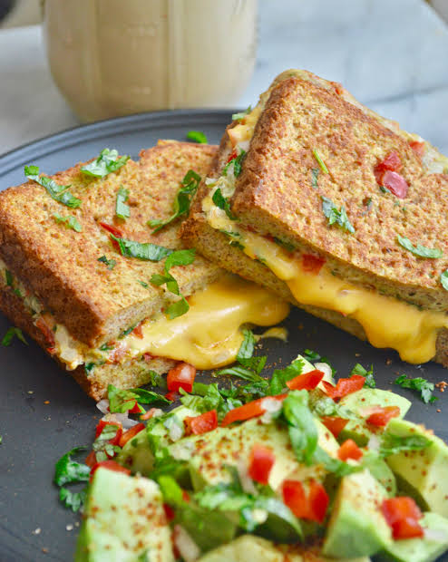

Home
coffee:

Incredients:
NOTE: the measurements mentioned are for 1 person
- couple of slices of bread
- 2 eggs
- cheese slices (as much as you want)
- veggies that you like
- oil(maybe 2 tsp)
steps to be followed:
- place the frying pan on top of the stove and heat it up
- spread the oil over the pan and toast the bread slices
- afterwards take the breads and crackthe eggs over the pan
- follow omlette recipe for this part
- and then palce the omlette,cheese and the veggies in btw the bread slice
- cut it diagonally and let the dish melt away in your mouth